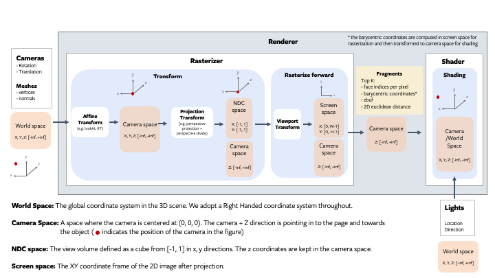

Renderer Getting Started
Architecture Overview
The renderer is designed to be modular, extensible and support batching and gradients for all inputs. The following figure describes all the components of the rendering pipeline.

Fragments
The rasterizer returns 4 output tensors in a named tuple.
pix_to_face: LongTensor of shape(N, image_size, image_size, faces_per_pixel)specifying the indices of the faces (in the packed faces) which overlap each pixel in the image.zbuf: FloatTensor of shape(N, image_size, image_size, faces_per_pixel)giving the z-coordinates of the nearest faces at each pixel in world coordinates, sorted in ascending z-order.bary_coords: FloatTensor of shape(N, image_size, image_size, faces_per_pixel, 3)giving the barycentric coordinates in NDC units of the nearest faces at each pixel, sorted in ascending z-order.pix_dists: FloatTensor of shape(N, image_size, image_size, faces_per_pixel)giving the signed Euclidean distance (in NDC units) in the x/y plane of each point closest to the pixel.
See the renderer API reference for more details about each component in the pipeline.
NOTE:
The differentiable renderer API is experimental and subject to change!.
Coordinate transformation conventions
Rendering requires transformations between several different coordinate frames: world space, view/camera space, NDC space and screen space. At each step it is important to know where the camera is located, how the x,y,z axes are aligned and the possible range of values. The following figure outlines the conventions used PyTorch3d.

NOTE: PyTorch3d vs OpenGL
While we tried to emulate several aspects of OpenGL, the NDC coordinate system in PyTorch3d is right-handed compared with a left-handed NDC coordinate system in OpenGL (the projection matrix switches the handedness).
In OpenGL, the camera at the origin is looking along -z axis in camera space, but it is looking along the +z axis in NDC space.

A simple renderer
A renderer in PyTorch3d is composed of a rasterizer and a shader. Create a renderer in a few simple steps:
# Imports
from pytorch3d.renderer import (
OpenGLPerspectiveCameras, look_at_view_transform,
RasterizationSettings, BlendParams,
MeshRenderer, MeshRasterizer, PhongShader
)
# Initialize an OpenGL perspective camera.
R, T = look_at_view_transform(2.7, 10, 20)
cameras = OpenGLPerspectiveCameras(device=device, R=R, T=T)
# Define the settings for rasterization and shading. Here we set the output image to be of size
# 512x512. As we are rendering images for visualization purposes only we will set faces_per_pixel=1
# and blur_radius=0.0. Refer to rasterize_meshes.py for explanations of these parameters.
raster_settings = RasterizationSettings(
image_size=512,
blur_radius=0.0,
faces_per_pixel=1,
bin_size=0
)
# Create a phong renderer by composing a rasterizer and a shader. Here we can use a predefined
# PhongShader, passing in the device on which to initialize the default parameters
renderer = MeshRenderer(
rasterizer=MeshRasterizer(cameras=cameras, raster_settings=raster_settings),
shader=PhongShader(device=device, cameras=cameras)
)